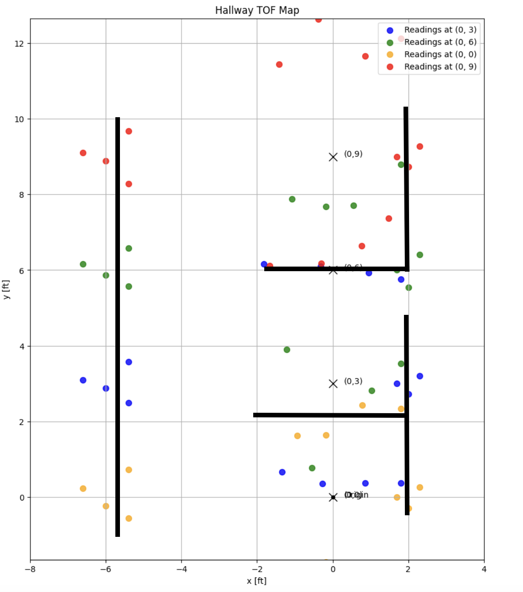

PID Controller
I chose to use option 2 from the lab handout for my orientation control. I set a fixed angle
incremet of 24 degrees that looped through the angles from 0 degrees to 360 degrees using my PID orientation
control loop. To achieve this I set up a new case in my arduino code called MAPPING. The robot systematically
rotates in increments of 24 degrees, using a PID
controller with preset gain values of KP=0.8, KI=0.001, KD=0 that I found via calibration, to accurately achieve
each target angle within a 5-degree
error threshold. At each position, the robot collects 3 distance readings along with timestamps and
orientation data from the IMU. I got a total of 45 datapoints over 9 angles. Once the full rotation is complete,
all collected data points: time,
distance, and yaw measurements—are sent to the Python code via Bluetooth. I then use this data to get the
mappings.
Getting Data
I placed the robot at 4 different positions in the hallway and recorded the data at these locations. For each
location I plotted the ToF vs yaw values on a polar plot.
Once I had generated the four polar plots, for the next step I used the transformation matrices as described in
lecture to convert the polar plots to cartesian coordinates.
I had collected data from four positions in the hallways which I labeled as: (0, 0), (0, 3), (0, 6), and (0, 9)
feet and
used mathematical transformations to convert these raw distance readings into a coherent spatial map. The
algorithm applies different transformations based on the angle of each reading – points that should form the left
wall are placed farther out (around 6 feet) while the right wall points are positioned closer (about 2 feet),
creating an asymmetric hallway with more space on the left side.
Transformation Mathematics
The transformation from polar to Cartesian coordinates involves two key steps:
First, converting from polar (r, θ) to local Cartesian coordinates:
xlocal = r·cos(θ)
ylocal = r·sin(θ)
Then, applying a transformation matrix to convert local coordinates to global map coordinates:
xglobal = cos(α) * xlocal - sin(α) * ylocal + xrobot
yglobal = sin(α) * xlocal + cos(α) * ylocal + yrobot
where (xrobot, yrobot) is the robot's position in the global frame, and α is the robot's
orientation.
In my implementation, I scaled the raw distances (in mm) to feet using the conversion factor:
distance (feet) = distance (mm) / 304.8
Once this was done I got the following map representing the hallway. I added in lines to the map based on the
hallway and got the below visualization.
